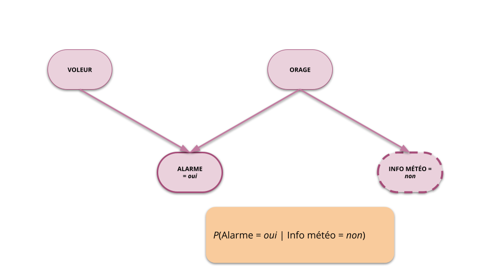

Modélisation stochastique et approche bayésienne
Inférence probabiliste
Roland Donat
Spécialité Cyber Data
Objectifs de la séance
- Comprendre la notion d'inférence probabiliste dans un réseau bayésien
- Maîtriser les calculs effectués par un algorithme d'inférence exacte
- Prendre conscience des avantages et des limites de l'inférence dans les réseaux bayésiens
Introduction à l'inférence probabiliste
Introduction à l'inférence probabiliste

Introduction à l'inférence probabiliste

Introduction à l'inférence probabiliste

Introduction à l'inférence probabiliste
Définition
- Soit un RB représentant la loi jointe d'une suite de v.a. \(\boldsymbol{X} = \lrpar{X_{1}, \ldots, X_{n}}\) à valeurs dans \(\mathcal{X}_{1}, \ldots, \mathcal{X}_{n}\) respectivement
- Objectif : calculer les lois de la forme \[ \Prob\lrPar{\boldsymbol{Q}|\boldsymbol{E} = \boldsymbol{e}} \]
- \(\boldsymbol{Q} = \lrpar{Q_{1},\ldots,Q_{\ell}} \subseteq \boldsymbol{X}\) est une suite de v.a. appelée "requête" de l'inférence
- \(\boldsymbol{E} = \lrpar{E_{1},\ldots,E_{m}} \subseteq \boldsymbol{X}\) est une suite de v.a., observées aux valeurs \(\boldsymbol{e} = \lrpar{e_{1},\ldots, e_{m}}\), appelée "évidence" de l'inférence
- Contrainte : \(\boldsymbol{Q} \inter \boldsymbol{E} = \varnothing\)
Introduction à l'inférence probabiliste
Inférence exacte
- Algorithme belief propagation (Pearl, J., 1988) adapté aux structures d'arbres (ou polyarbres)
- Méthodes reposant sur la construction de l'arbre de jonction (Lauritzen, S. L. and Spiegelhalter, D. J., 1988)
- Méthodes d'élimination des variables (Cozman, Fabio G., 2000, Dechter, R., 1999)
Inférence approchée déterministe
- Algorithme loopy belief propagation (Murphy, K. P. and Weiss, Y. and Jordan, M. I., 1999) : Utilisation de la méthode \textit{belief propagation} sur un graphe général
- Méthode de raisonnement par pertinence (Lin, Yan and Druzdzel, Marek J., 1999)
Inférence approchée stochastique
- Méthode d'échantillonnage type Monte-Carlo
Méthode d'élimination
Hypothèses d'utilisation
- Méthode adaptée pour les réseaux bayésiens à variables discrètes et finies, i.e. LPC sous forme de tables (matrices)
- Si le phénomène étudié implique des variables continues et/ou non finies, il faut les discrétiser au préalable
Principe
- "Éliminer" par marginalisations successives toutes les variables de la loi jointe qui n'apparaissent pas dans le calcul à réaliser
- Simplifier le calcul à réaliser grâce à la propriété de factorisation des RB et choississant un "bon" ordre d'élimination des variables
Propriétés
- L'ordre d'élimination des variables n'influe pas sur le résultat, i.e. tous les ordres aboutissent au même (bon) résultat
- En revanche, la rapidité des calculs est fortement liée à l'ordre d'élimination
- Méthode de référence implémentée dans la plupart des outils de réseaux bayésiens
Méthode d'élimination des variables

Inférence dans le réseau bayésien Alarme
- La problématique fait intervenir 4 variables aléatoires : Voleur (\(V\)), Alarme (\(A\)), Orage (\(O\)), Info météo (\(M\))
- Le RB qui modélise la problématique permet de factoriser la loi jointe des variables aléatoire comme suit : \[ P(V,A,O,M) = P(V) \times P(A|V; O) \times P(O) \times P(M|O) \]
Méthode d'élimination des variables
Calcul de P(Voleur=oui|Alarme=oui)
Par définition : \[ P(V = \text{oui}|A = \text{oui}) = \frac{P(V = \text{oui}; A = \text{oui})}{P(A = \text{oui})} \]
Calcul du numérateur
On marginalise simplement sur les variables Voleur et Alarme : \[ P(V = \text{oui}; A = \text{oui}) = \sum_{O \in \{\text{non}, \text{faible},\text{fort}\}} \sum_{M \in \{\text{non}, \text{oui}\}} P(V = \text{oui}; A = \text{oui},O,M) \]Méthode d'élimination des variables
Calcul du numérateur par "élimination"
On utilise la propriété de factorisation :
On "élimine" successivement les variables \(M\) et \(O\) en distibuant les sommes dans la factorisation :
Calcul du dénominateur par "élimination"
Principe identique :
Complexité
Complexité spatiale d'une LPC discrète et finie
- Soient \(\boldsymbol{X} = X_{1},\ldots,X_{n}\) et \(\boldsymbol{Y} = Y_{1},\ldots,Y_{m}\) deux suites de v.a. à valeurs dans les ensembles discrets et finis \(\mathcal{X}_{1}, \ldots, \mathcal{X}_{n}\) et \(\mathcal{Y}_{1}, \ldots, \mathcal{Y}_{m}\)
- La complexité spatiale associée à la LPC \(P(X_{1},\ldots,X_{n}|Y_{1},\ldots,Y_{m}) = P(\boldsymbol{X}|\boldsymbol{Y})\), notée \(CS(P(\boldsymbol{X}|\boldsymbol{Y}))\), est définie par le nombre de configurations de valeurs différentes que peuvent prendre les v.a. \(X_{1},\ldots,X_{n}, Y_{1}, \ldots, Y_{m}\)
- Autrement dit : \[ CS(P(\boldsymbol{X}|\boldsymbol{Y})) = \prod_{i = 1}^{n} |\mathcal{X}_{i}| \prod_{j = 1}^{m} |\mathcal{Y}_{j}| \] où \(|\mathcal{X}_{i}|\) est le nombre d'éléments dans l'ensemble \(\mathcal{X}_{i}\)
Exercice
- Donner les complexités spatiales des LPC du RB "Alarme"
Complexité
Complexité probabiliste d'une LPC discrète et finie
- Soient \(\boldsymbol{X} = X_{1},\ldots,X_{n}\) et \(\boldsymbol{Y} = Y_{1},\ldots,Y_{m}\) deux suites de v.a. à valeurs dans les ensembles discrets et finis \(\mathcal{X}_{1}, \ldots, \mathcal{X}_{n}\) et \(\mathcal{Y}_{1}, \ldots, \mathcal{Y}_{m}\)
- La complexité probabiliste associée à la LPC \(P(X_{1},\ldots,X_{n}|Y_{1},\ldots,Y_{m}) = P(\boldsymbol{X}|\boldsymbol{Y})\), notée \(CP(P(\boldsymbol{X}|\boldsymbol{Y}))\), est définie par le nombre de paramètres (probabilités) nécessaires pour définir la LPC
- Autrement dit : \[ CP(P(\boldsymbol{X}|\boldsymbol{Y})) = \prod_{i = 1}^{n} (|\mathcal{X}_{i}| - 1) \prod_{j = 1}^{m} |\mathcal{Y}_{j}| \]
- La CP tient simplement compte du fait qu'une LPC doit sommer à 1 pour chaque configuration des variables de conditionnement
- La CP mesure le potentiel de modélisation d'une loi (notion de degré de liberté)
Exercice
- Donner les complexités probabilistes des LPC du RB "Alarme"
Complexité
Complexité d'une loi jointe représentée par un RB
- Soit \(X_{1},\ldots,X_{n}\) une suite de v.a. à valeurs dans les ensembles discrets et finis \(\mathcal{X}_{1}, \ldots, \mathcal{X}_{n}\)
- La complexité spatiale (resp. probabiliste) d'une loi jointe factorisée dans un RB est définie comme étant la somme des complexités spatiales (resp. probabilistes) associées à chacune des LPC \(P(X_{i}|\text{pa}(X_{i}))\)
- La complexité spatiale du RB a pour expression : \[ CS(RB) = \sum_{i = 1}^{n} CS(P(X_{i}|\text{pa}(X_{i}))) = \sum_{i = 1}^{n} |\mathcal{X}_{i}| \times \prod_{\mathcal{X} \in \text{pa}(\mathcal{X}_{i})} |\mathcal{X}| \]
- La complexité probabiliste a pour expression : \[ CP(RB) = \sum_{i = 1}^{n} CP(P(X_{i}|\text{pa}(X_{i}))) = \sum_{i = 1}^{n} (|\mathcal{X}_{i}| - 1) \times \prod_{\mathcal{X} \in \text{pa}(\mathcal{X}_{i})} |\mathcal{X}| \]
Complexité
RB = Représentation parcimonieuse
- Un RB est une représentation compacte d'un processus aléatoire
- Moins il y a d'arcs dans le graphe :
- Plus des hypothèses d'indépendances conditionnelles entre les variables sont posées
- Plus le potentiel de modélisation, i.e. la capacité à représenter des phénomènes complexes, diminue (\(CP\) faible)
- Plus la représentation par RB est avantageuse du point de vue du stockage, du paramétrage et de la complexité calculatoire (\(CS\) faible)
Exercice
Calculer les complexités du modèle "Alarme" avec et sans RB
Résumé de la séance
Points clés
- Un réseau bayésien permet de formaliser et réprésenter un phénomène aléatoire sous forme de
graphe :
- Noeuds du graphe = Variables aléatoires
- Arcs entre noeuds = Relations de dépendance
- L'information apportée par la structure du graphe permet en général de simplifier la loi jointe du phénomène aléatoire étudié (notion de parcimonie)
- Si les LPC du RB sont connues, des algorithmes d'inférence probabiliste permettent de déduire de nouvelles connaissances sur le phénomène aléatoire étudié
- Les réseaux bayésiens sont intéressants pour les raisons suivantes :
- Lisibilité et interprétabilité des modèles
- Rigueur mathématique
- Fort potentiel de modélisation
Merci pour votre attention !

Bibliographie
Cozman, Fabio G. (2000). Generalizing {Variable} {Elimination} in {Bayesian} {Networks}, Editora Tec Art.
Dechter, R. (1999). Bucket {Elimination}: {A} {Unifying} {Framework} for {Reasoning}, Artificial Intelligence.
Lauritzen, S. L. and Spiegelhalter, D. J. (1988). Local {Computations} with {Probabilities} on {Graphical} {Structures} and {Their} {Application} to {Expert} {Systems}, Journal of the Royal Statistical Society.
Lin, Yan and Druzdzel, Marek J. (1999). Relevance-based {Incremental} {Belief} {Updating} in {Bayesian} {Networks}, International Journal of Pattern Recognition and Artificial Intelligence.
Murphy, K. P. and Weiss, Y. and Jordan, M. I. (1999). Loopy {Belief} {Propagation} for {Approximate} {Inference}: {An} {Empirical} {Study}.
Pearl, J. (1988). Probabilistic {Reasoning} in {Intelligent} {Systems}: {Networks} of {Plausible} {Inference}, Morgan Kaufmann.